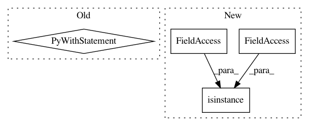

3f923941d0c6025160491286c2d119170a6d9d59,cnvlib/vary.py,,read_vcf,#,10
Before Change
def read_vcf(vcf_fname, sample_id=None, min_depth=1, skip_hom=True,
skip_reject=False, skip_somatic=True):
Parse SNV coordinates from a VCF file into a DataFrame.
with open(vcf_fname) as vcffile:
vcf_reader = vcf.Reader(vcffile)
rows = parse_records(vcf_reader, sample_id, min_depth, skip_hom,
skip_reject, skip_somatic)
dframe = pd.DataFrame.from_records(rows, columns=[
"chromosome", "start", "end",
"ref", "alt", "zygosity", "depth", "alt_count"])
dframe["alt_freq"] = dframe["alt_count"] / dframe["depth"]
return dframe
After Change
def read_vcf(cls, infile, sample_id=None, min_depth=1, skip_hom=True,
skip_reject=False, skip_somatic=True):
Parse SNV coordinates from a VCF file into a VariantArray.
if isinstance(infile, basestring):
vcf_reader = vcf.Reader(filename=infile)
else:
vcf_reader = vcf.Reader(infile)
In pattern: SUPERPATTERN
Frequency: 3
Non-data size: 4
Instances
Project Name: etal/cnvkit
Commit Name: 3f923941d0c6025160491286c2d119170a6d9d59
Time: 2015-08-11
Author: eric.talevich@gmail.com
File Name: cnvlib/vary.py
Class Name:
Method Name: read_vcf
Project Name: Cadene/bootstrap.pytorch
Commit Name: 5d5209a072c84408e0856e2a1b6c193a439920de
Time: 2019-09-09
Author: mcoaky@gmail.com
File Name: bootstrap/lib/options.py
Class Name: Options
Method Name: load_yaml_opts
Project Name: mariogeiger/se3cnn
Commit Name: 9c309a959052ec40cf92cf4baa3894f5118cf8c4
Time: 2019-07-08
Author: geiger.mario@gmail.com
File Name: se3cnn/blocks/point_gated_block.py
Class Name: PointGatedBlock
Method Name: __init__